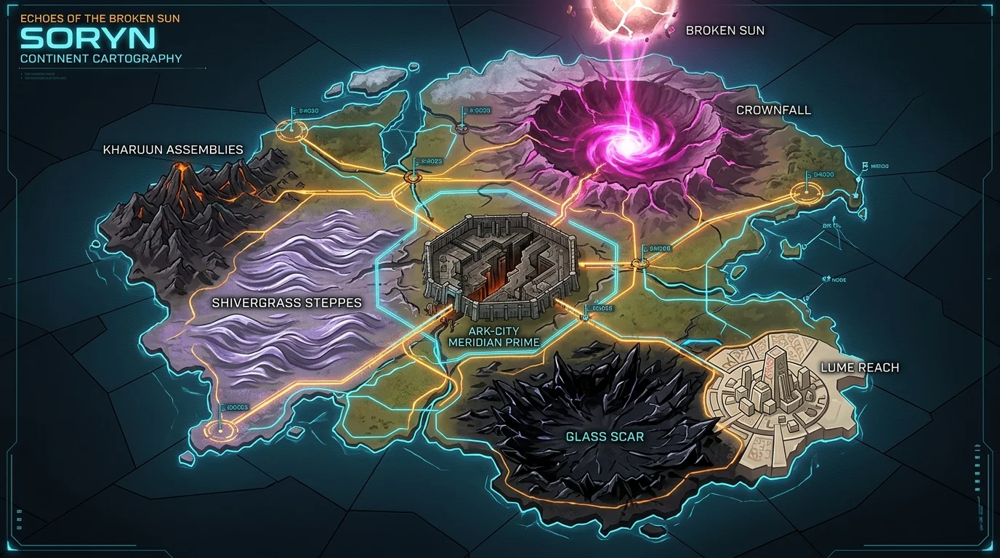
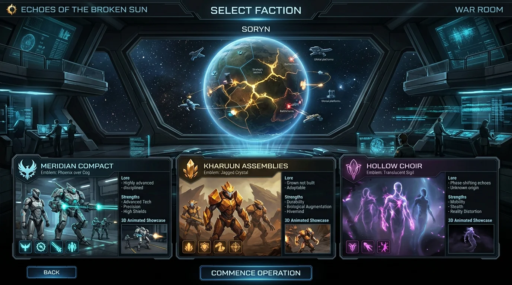

Planetary
Tactical Atlas.
Survey the scarred surface of Soryn. Interactive command telemetry tracks elevated threat sectors, control zones, and operational briefs.

The Glass Scar
A fractured obsidian transit span outside Lume Reach. As civic reserves collapse, Commander Mara Vey coordinates civilian evacuation while Talar Venn attempts to recover missing archive canisters from the census void.
Map the surface.
Read the terrain.
From the continental cartography to the first battlefield's three diverging routes — every tactical advantage on Soryn begins with knowing the ground. Compare concept targets against the current Unreal Engine build.

Six biomes, four continental plates, and fifteen campaign battlefields connected by arterial roads across the shattered surface of Soryn.
Three factions.
One broken sun.
No faction is simply good or evil. The Meridian Compact trusts systems that can be measured. The Kharuun Assemblies protect a living chain of memory. The Hollow Choir speaks for futures that were erased.
Meridian Compact
Logistics Grid & Precision Defense
A culturally plural alliance joined by Dawnshard accounting, civic engineering, and collective defense. Anchors and Power Links generate an interconnected energy web that powers defensive Aegis posts, rapid repair hubs, and long-range rail rifles.
Arsenal Targets


Not final graphics. Every in-engine image on this page is a capture from the current development build, kept deliberately plain so layout, readability, and systems can be judged now. Final art, lighting, effects, animation, and destruction are scheduled for the last phase of production — the finished game will not look like these captures.
The Future Well
Dormant Alignment


Not final graphics. Every in-engine image on this page is a capture from the current development build, kept deliberately plain so layout, readability, and systems can be judged now. Final art, lighting, effects, animation, and destruction are scheduled for the last phase of production — the finished game will not look like these captures.
Five lives.
No complete truth.
The war is fought by commanders, scholars, and survivors making defensible choices under existential collapse—discovering that survival often justifies control, concealment, or erasure.
A survivable, predictable future for Soryn through disciplined preparation, fortified logistics, and clear accountability.
Turning every moral question into a control problem risks making erasure of inconvenient people feel like administrative necessity.
Mid-30s commander in pale ceramic and graphite field armor with exposed brass load joints and glowing cyan conduit diagnostics.
Measured pace, clipped sentence ends under combat load; anxiety registers as razor-sharp procedural precision.
Beyond the clone trap.
Tactical clarity for a modern RTS.
StarCraft II proved the power of high contrast. But copying its 1998 three-box bottom console robs an RTS of screen space. Echoes replaces the bottom shelf with an elegant floating contextual command arc, vector contour radar, and diegetic command bridges.

Leaves the battlefield unobstructed at the bottom center. Abilities appear conditionally based on selection.
Top-left minimalist topology scan rather than a muddy raster minimap.
Top-right Matter, Dawn, and Logistics flow instantly readable.


Every screen
tells a story.
From faction selection to post-match debriefing, every interface in Echoes is designed as a diegetic artifact within the world of Soryn — not a generic shell menu. Explore every UI concept target.

Three faction crests orbit a central strategic hologram. Players choose their doctrine before entering the campaign or skirmish theater.
A foundation first.
A living world next.
The project is building deterministic strategy systems and a bounded campaign arc before claiming finished presentation. Fifteen linked campaign operations, first-pass meshes for the current roster, a four-state Future Well, and seven authored Glass Scar world assets now exist; production terrain, textures, effects, animation, audio, and a public release are still ahead.